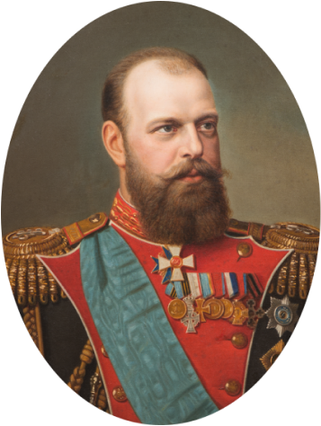

Период правления Александра III характеризуют стабильность внутренней и внешней политики, развитие производительных сил страны, подъем науки и национальной культуры.
Это было недолгое затишье перед бурями и потрясениями начала XX столетия.
Александра III современники заслуженно называли Миротворцем. Он остается единственным монархом России, во время правления которого не было ни одной войны.
Эта мирная передышка самым благотворным образом сказалась на состоянии государства и положении народа.
| I | ДЕТСТВО И ЮНОСТЬ ВЕЛИКОГО КНЯЗЯ | |
| II | СЕМЬЯ ИМПЕРАТОРА | |
| III | ВОСШЕСТВИЕ НА ПРЕСТОЛ | |
| IV | КОРОНАЦИЯ | |
| V | ВНУТРЕННЯЯ ПОЛИТИКА И КОНТРРЕФОРМЫ | |
| VI | ВНЕШНЯЯ ПОЛИТИКА | |
| VII | ПОКРОВИТЕЛЬ ИСКУССТВ |